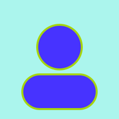

Hi, I'm Lari — a developer who likes building clean, simple things. This is a short intro about who I am and what I do.

Experience
Design Manager
Nov 2021 – Jan 2025
- Managed 12 Product & Digital Designers within a 24-person design org (plus 2 contractors) across roughly 10 concurrent client accounts.
- Helped recruit a second Design Manager and built a close peer partnership so both teams operated and communicated as one.
- Ran weekly/bi-weekly 1:1s centered on career-goal planning, paired with hands-on project support — kick-offs, UX/research reviews, client prep, critique.
- Drove 4 promotions from Intermediate to Senior, plus a Digital Designer's transition into a Product Designer role.
- Refined the hiring workflow with Recruiting; co-built mentoring programs, workshops, and the seniority/career-path framework for the discipline.
- Presented a company-wide async-communication guide that became part of new-hire onboarding.
- Contributed to team culture during the company's Great Place to Work year; also supported pitch decks, client visits, audits, and estimates.
Senior Product Designer
May 2018 – Nov 2021
- Designed digital experiences for Walmart, Quizlet, and PayPal, from discovery through delivery.
- Led client discovery sessions, translating business requirements into design solutions and strategy.
- At Walmart: Supply Chain and Internal Catalog products — research, testing, wireframes, visual design, and QA across web and mobile.
- At Quizlet: Acquisition team (sign-up/login flows) and SEO team, where a Subject Pages redesign increased traffic by 12%.
- Built and maintained design systems across platforms; mentored junior designers.
- Contributed to recruiting and career-path frameworks alongside team leadership.
Product Designer
Jul 2016 – Mar 2018
- Drove user research and innovation for a multi-platform point-of-sale product spanning PC, web, and mobile for small and medium retailers.
- Designed user-centric features in close collaboration with development and leadership teams.
- Supported the migration from a PC-only system to web, and redesigned the core checkout flow for clarity and speed.
- Contributed to team leadership and recruitment.
Skills
- JavaScript
- Python
- HTML & CSS
- Design